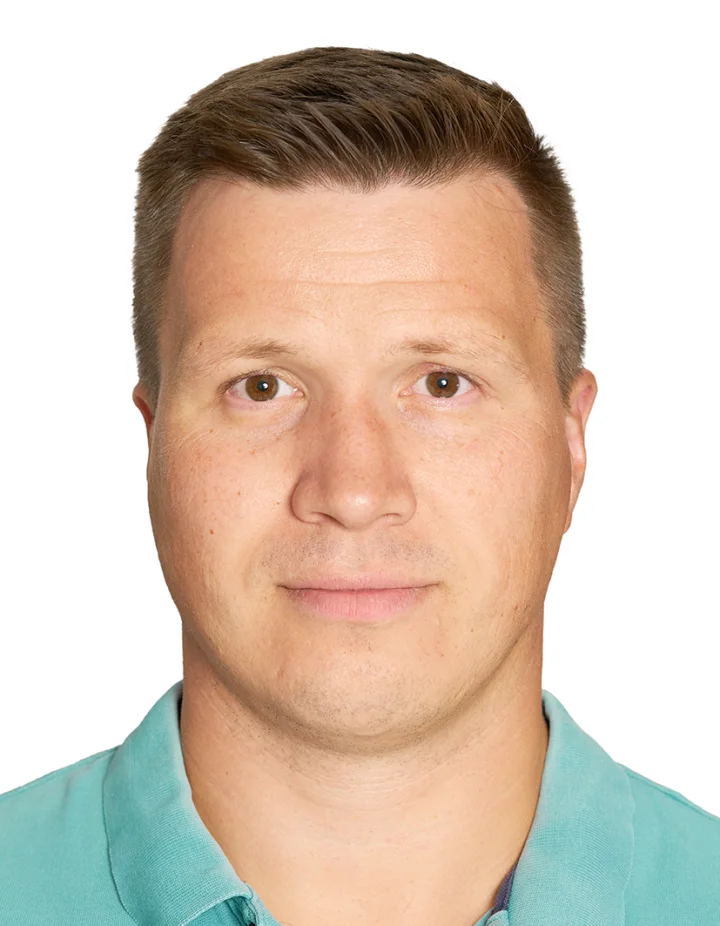

IT systems & infrastructure
Cloud services, workplace systems, networks, identity, devices, MDM, security controls, procurement and reliable day-to-day operations.
Independent IT & AI Consultant
Into systems that work.
For more than 20 years, I have worked across IT and business—solving problems that do not fit neatly into one department. I help companies build reliable infrastructure, clearer processes and practical AI workflows grounded in real data and explicit rules.
Based in Lisbon, working with clients internationally.

My background spans IT infrastructure, information security, business processes, product information management, sales, partnerships and procurement.
I have worked in technical, commercial and operational roles, so I can move between business priorities and implementation detail without losing the logic that connects them.
I took on system-wide responsibility early in my career and learned directly from experienced practitioners. It shaped how I work today: understand dependencies, make constraints explicit and remain accountable for implementation.
Today, I apply the same systems thinking to AI, using it to extend—not replace—experience and judgment.
A whole-system perspective
My work typically starts where several disciplines overlap and solving each part separately would miss the larger issue.
Cloud services, workplace systems, networks, identity, devices, MDM, security controls, procurement and reliable day-to-day operations.
Process design, PIM, CRM and work-management systems, documentation, integrations, sales, procurement and operational improvement.
Grounded AI workflows, specialized AI roles, AI-driven development, validation paths and integrations—plus the training teams need to use them effectively.
My commercial experience keeps technical work connected to business value, real constraints and the people responsible for the outcome.
Selected independent engagement
I work across IT, AI and operations for an international team, including a team based in Portugal.
Product data
Implementing the platform and creating a clearer structure for product information.
Ways of working
Establishing task and project management that makes work easier to plan and trace.
Operating model
Defining business processes, responsibilities and practical documentation across the company.
AI-enabled delivery
Designing integrations and documentation through AI-driven development, supported by specialized AI architect roles that I design and supervise.
Team capability
Building the operating environment and helping employees understand and use it responsibly.
Foundation
Managing cloud services, Google Workspace, hardware procurement and configuration, devices and MDM.
Grounded, controlled, useful
Deterministic systems provide rules, consistency and control. AI is useful for interpretation, synthesis and handling variation. I design the bridge between them.
In the systems I design, AI works with trusted company data, explicit rules and validation steps, while established systems remain the source of truth. This can improve speed and adaptability, reduce hallucination risk and support traceability.
The AI harness
I bring together specialized AI roles, instructions, company knowledge, tools and validation paths—then teach the team how to understand, use and improve the system.
Map the goals, constraints, people, data and existing systems before choosing a solution.
Define responsibilities, rules, architecture and a realistic path from the current state to a better one.
Configure systems, build integrations, document decisions and support adoption—not just deliver recommendations.
Give people enough understanding to use, evaluate and improve the result independently.
More than 20 years
—present
Lisbon, Portugal
Working directly with businesses on cross-functional challenges—from systems implementation and infrastructure to process design and practical AI adoption.
—
Pyrus
Translated business needs into practical workflow design and automation.
—
Brandquad
Worked across product data requirements, platform capabilities and the processes needed for PIM implementation.
—
Axidian
Led complex technology sales and partner development, aligning decision-makers, partners and technical implementation teams.
—
Hoff Tech
Worked in a large, demanding environment with broad responsibility across infrastructure and business-critical systems.
—
Malakut Insurance Brokers
Held end-to-end responsibility for the systems and infrastructure supporting day-to-day operations across the business.
Education
Organizational Management
Moscow Economic and Financial Institute (MEFI)
Open to B2B projects and professional partnerships
If you are working through a cross-functional technology, operations or AI challenge—or exploring a professional partnership—I would be glad to hear from you.
zeludas@gmail.com Connect on LinkedIn